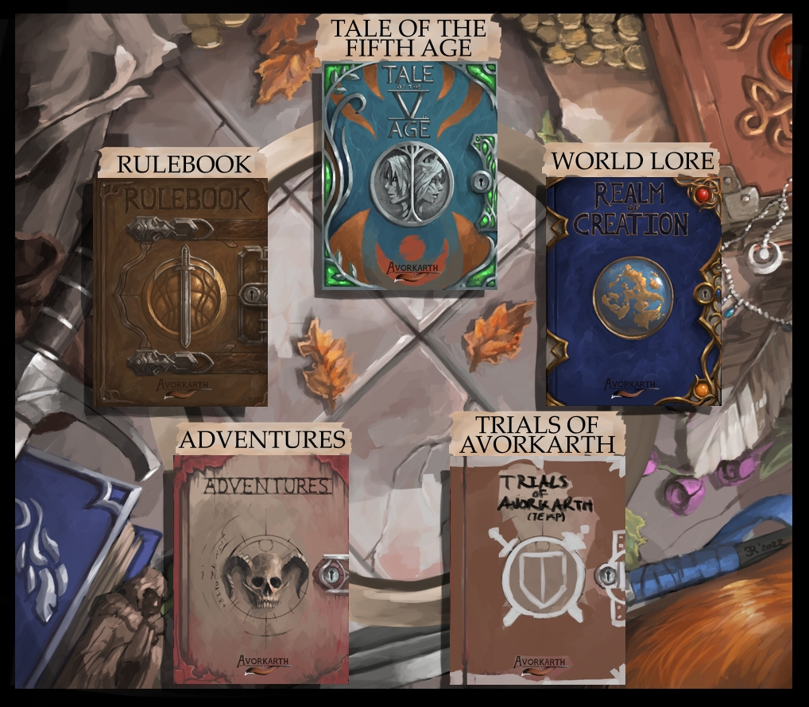

FEEDBACK |
|
|---|---|
|
The artwork, lore, story and realm of Avorkarth alongside all of its aspects is
a one man project. |
| ARTWORKS | PROJECT SUPPORT |
|---|---|
 |
 |
MOST RECENT NEWS/CHANGESXth May. 2023I WAS CURRENTLY AT MASTERY (Rewriting mastery section - - Swap Interactions and Mastery in Rulebook order.I've been working behind the scenes on a large change across the board of Avorkarth. I originally intended for Avorkarth to be a low-fantasy realm but I noted that I did the mistake I most feared with power-creep and have added too much "normalcy" to the fantasy aspect. The changes made are to revert the realm back to what I had originally intended. A mostly human realm, with the fantasy aspects being fantastical. Secondly, the rules were a bit too complicated, so I tuned down some of the rules and removed most rules that had multipliers/divisers while keeping all the stats the same. It should be easier overall to pick up and play, but still have enough complexity for immersion. Rulebook ABILITY SCORES - -- Re-added Toughness as an attribute due to the changes to wounds, weapons and armours. ATTRIBUTES - -- Reduced all sizes and reaches. Creatures are overall much smaller than before (although a dragon is still massive compared to a human.) -- Added the World Lore languages and descriptions to the rulebook under the rules of languages. Updated the language mastery costs alongside the update to mastery. -- Updated the ability scores' effect on attributes to reflect the changes to ability scores over the many previous changes. MASTERY - -- Reworked the Mastery system to be easier and more consistent across the board. Each bonus is now in the +/- 1 range instead of arbitrary numbers. -- Removed the overwritten/convoluted Weapon and Combat mastery system. The +/- system works for the updated combat and weaponry as well. -- Re-added classes and have further added talents. (For now, only the base classes have talents. These will probably be changed over the next updates as they are preliminary.) INTERACTIONS - -- Redid a few of the interactions to work with the combat changes, and added a few that were missing. SKILLS - -- Updated many skill resolves due to the changes in mastery. -- Removed all the skill type benefits and negatives due to the changes to mastery. -- Fixed many spelling and grammatical errors. -- The tumble skill was changed to simply "reduce" the amount of tiles fallen. -- The heal skill was changed to removing minor wounds, due to the change in the wound/damage system. COMBAT - -- Updated the wound system to differentiate between minor/lesser/lethal wounds. -- Removed the harsh penalties to Ranged Attacks. -- Added immobilisation rules to dodge so that the fantasy of playing an assassin can actually function with the new wound system. -- Removed the parry/block rules. Parrying is now in the striking section as a simpler rule. -- Resistances now function with the same rules as armour. -- Made the combat round rules simpler to, removing a few dice rolls that were unnecessary. -- Removed the damage part of rolling. Now it's simply hit -> strike instead of hit -> strike -> damage. EQUIPMENT - -- Removed all damage increases by metallic components, leaving only might increases. -- Updated many items +/- values to be smaller to better match the lore. ---- LOOKING AT EQUIPMENT! THIS IS WHERE ---- -- The change towards might means that the numbers may get a bit higher than I wished... This problem is also because humans have a score of 10 as base, which is quite high. As noted, damage done is reduced by the user's strength difference too. That feels tacky though. (But it works... As long as mortal wounds remain the same. 1 to 1, as it were.) Death by a thousand cuts becomes a lot stronger with this... -- Removed damage from all weaponry. Damage dealt is simply a matter of hitting an opponent. (Special rules for things such as natural weapons are per weapon.) (DONE IN COMBAT!) World Lore -- Changed the scaling of creatures to return to a smaller more "low fantasy" scale that I prefer. I noted that I was starting to power creep the world. 'Tis a tricky one. -- Following the previous note of "low fantasy"; Removed all the creatures of Lazras' Treaty and their attached lore. They were too "high fantasy" for my taste. The deities and cultures will remain, but the species will be merged into a humanoid one that worships the jungle gods, instead of jungle beast-men that are alike visually to their gods. It makes creatures of beast/humanoid mixing an extreme rarity instead of a commonplace thing. 17th June 2023
World Lore/Creatures
27th May 2023
Tale of the Fifth Age
12th May 2023
World Lore/Creatures
18th Apr. 2023
World Lore/Creatures
8th Apr. 2023
World Lore/Timeline
11th Mar 2023
Tale of the Fifth Age
7th Mar 2023
Rulebook : Ability Scores/Combat Attributes
|